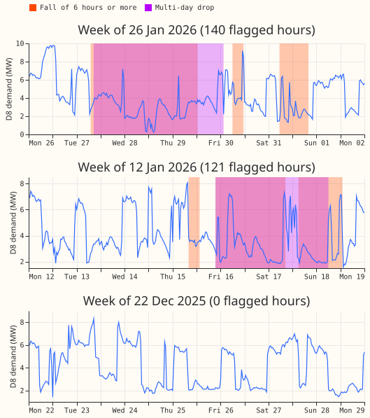
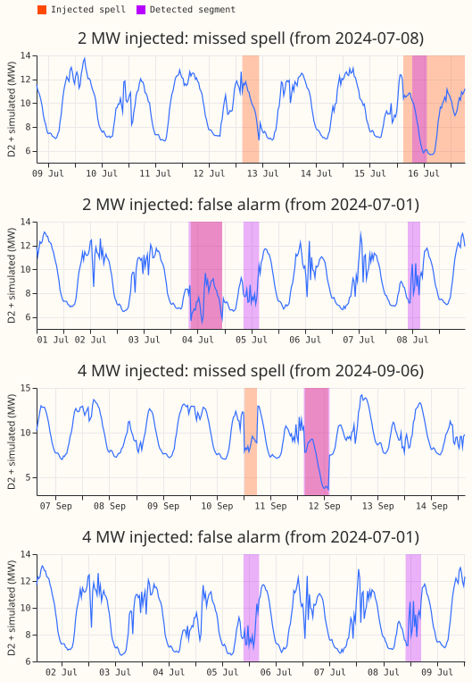
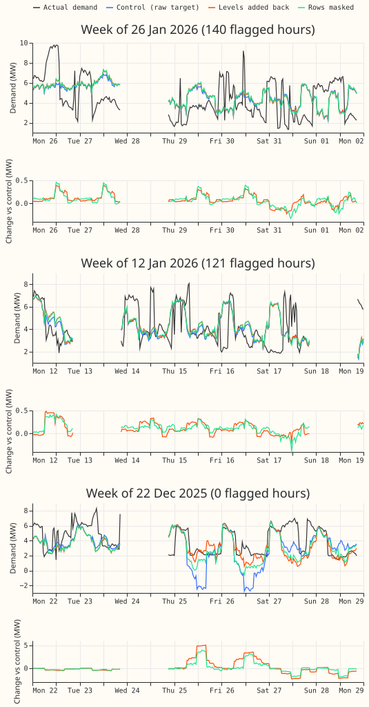
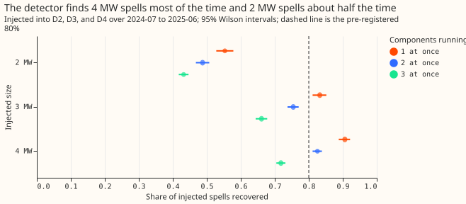
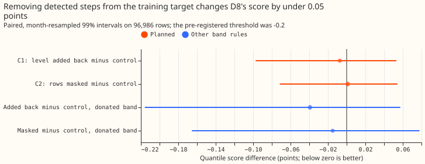
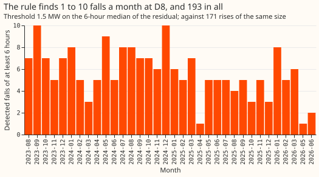

Can a plain step detector separate generator-like steps from D8's demand, and does removing them from the training target improve the GAM stack?
A plain step detector separates 3 MW and 4 MW generator-like spells from D8's demand most of the time, but removing the steps it finds from the training target does not improve D8's forecast.
The test does not support building a particle filter on the evidence of this detector. A detector
that rejects ordinary demand swings is one option, since the rule flags nearly as many rises as
falls. The verdict is not supported.
Figure A: the detector's falls and drops at D8 cover the long dips in demand in two winter weeks, and nothing in a week with no detected falls.

The three weeks start on 12 January 2026, 26 January 2026, and 22 December 2025. The first two are the non-overlapping weeks with the most detected hours (121 and 140) in the 12 months over which the forecasts are scored (2025-07-02 to 2026-06-30). The third is the week with no detected hours closest to the middle of those 12 months. The residual-median rule for choosing weeks was fixed before any chart was drawn. Detection here uses the whole record, including data after each monthly refit date. Orange shading marks falls of 6 hours or more. Purple shading marks multi-day drops. Where the two overlap, the colour is pink.
Figure B: with 2 MW and 4 MW spells injected into D2, the detector misses some spells and flags some segments that match no injected spell.

The spells are simulated and added to the power readings of D2, a primary substation (Primary) with no known generator: one random set of on/off spells for each size, spread over July 2024 to June 2025. Each panel shows 8 days. Each "missed" panel shows the earliest injected spell (orange) that has no detected half-hours, and the first 2 MW panel also shows a second spell that was only partly found. Each "false alarm" panel shows the earliest detected segment (purple) that overlaps no injected spell, on 5 July 2024. In these panels, pink marks an injected spell that was also detected.
Figure C: removing the detected steps from the training target changes D8's median forecast by under 1 MW in the weeks shown, and the score does not improve.

The lines are the median forecast, made 12 to 36 hours ahead, for the same three weeks as Figure A, from three variants of the GAM stack: the control (raw target), the variant with the detected levels added back to the training target, and the variant with the detected rows masked. The black line is the actual demand. Gaps are half-hours with no stored forecast. The lower panels show each variant's forecast minus the control forecast. In the week starting 22 December 2025, all three variants forecast negative demand on 25 and 26 December, while the readings stay positive.
Figure A and Figure C show only D8, and Figure B shows only D2. These figures illustrate the result. They do not test it. The study is interim: a detector that rejects ordinary demand swings has not been tried.
D8 is a primary substation (Primary) whose power seems to include a dispatchable generator that switches on and off. We asked whether a simple rule can find such steps in D8's power, and whether taking them out of the training target helps the forecast. We added simulated on/off spells of 2, 3, and 4 MW to three Primaries with no known generator, D2, D3, and D4, and counted how many spells the rule found again. We then refitted D8's generalised additive model (GAM) stack with the detected steps removed. The quantile score is twice the mean pinball loss over 11 quantiles, in points of D8's capacity (1 point is about 0.1 MW), and lower is better. The residual-median rule extends experiment 159's rule for multi-day drops (experiment 159). The stack, its refits, and the own-residual band come from experiment 354, and the gas-engine background from experiment 264, experiment 265, and experiment 291.
Figure 1: the detector finds 4 MW spells 91% of the time and 2 MW spells 55% of the time.

Figure 2: neither removal arm moves the score by more than 0.1 points.

Figure 3: the rule finds falls in every month.

Results
- Detector. The baseline of each half-hour is the median of the same half-hour on the 2 to 8 days before and after. A fall is a run of at least 6 hours in which the 6-hour centred median of the residual is at or below -1.5 MW, with gaps under 6 hours merged. A multi-day drop uses experiment 159's rule (24-hour median, gaps under 12 hours merged, at least 2 days). At a fit cut only data before the cut is seen. The drop pass was added after the first catalogue run found only 4 drops of 2 days or longer with the 6-hour rule, and before any forecast was scored.
- Catalogue at D8 since 2023-08-15. 193 falls of at least 6 hours (median level -3.0 MW, median dwell 0.38 days) and 171 rises of the same size; 6 multi-day drops (median level -2.7 MW, median dwell 2.5 days). At 1.0 MW the counts are 273 falls and 11 drops; at 2.0 MW, 126 falls and 1 drop. Prediction P2 (25 to 40 falls and 20 to 30 drops) failed on both counts: experiment 159 found 29 drops with a different baseline.
- Injection test. 20 draws on each of D2, D3, and D4, 2024-07 to 2025-06, with spells and gaps resampled from D8's catalogue. A spell is recovered when detected segments cover at least half of it and the segment's level is within 30% of the injected total. One component at a time: 75% (3,986 spells; 95% Wilson interval 73% to 76%); 2 MW 55%, 3 MW 83%, 4 MW 91%. Two at once: 70%. Three at once: 59%, and 43% at 2 MW. Two simultaneous 4 MW spells still reach 83%, and two simultaneous 3 MW spells reach 75%. The median start error is 0 to 1 hour (0.5 in most cells) and the median level error is within 6% of the injected level in every cell. On the uninjected hosts the same windows are recovered by chance 0.4% of the time, and the rule finds 29, 5, and 6 falls a year at D2, D3, and D4. P1 failed on its first half (75% against 80%) and held on its second.
- Rows. 96,986 half-hourly rows at D8 in 2025-07-02 to 2026-06-30, leads 0.5 to 168 hours (the
stored ensemble forecasts stop at 168 hours),
fold_a_daily_gap_v1. Intervals resample whole months at the 99% level, the Bonferroni level for two planned contrasts. - Arms. Monthly refits (12 fits) from 2023-09 with a level step per hour band at 2025-04-01, arm
3's own-residual band by hour block and season, the night offset and recipe R. Control: the raw
target. T1: each detected segment's level added back to its rows. T0: the segment's rows masked
from the fit. The detector flags 9% to 13% of training rows at the cuts checked (2024-09 and
2026-06), at a mean level of about -3.0 MW. Fit code is copied from experiment 354's
e00354_fit.pywith the target edit; the scripts import experiments 252, 264, and 354. - Gate. The control scores 8.382, as in experiment 354's fit (b).
- Absolute scores, all rows. Control 8.382, T1 8.375, T0 8.384, BG2 7.593, manual heuristic 8.469, climatology 9.757. All three arms trail BG2.
- C1, T1 minus control. -0.007 (99% -0.097 to +0.053), so P3 (at least -0.2) failed.
- C2, T0 minus control. +0.001 (-0.071 to +0.054). P4 held only because masking moved the score by +0.001.
- Post hoc slices, descriptive. On sunny daylight half-hours, T1 minus control is -0.197 (-0.699 to -0.015) and T0 minus control -0.105 (-0.526 to +0.079). On cold nights, T1 minus control is -0.100 (-0.206 to +0.274). These slices were not planned, so they do not change the verdict.
- Tail calibration, arm 3 band. q05 to q95 coverage 0.846 (control), 0.847 (T1), 0.845 (T0). Share of readings below q01 0.039, 0.040, 0.040. Share above q99 0.029 in all three.
- Scope. Dispatchable on/off components only; solar and wind follow the weather. Only the sum of demand and generators is observed, so components of similar size may be unidentifiable. The generator behind D8 is unproven (experiments 264, 265, 291). The result is for D8 at leads of 0.5 to 168 hours, shorter than the 10-day horizon the network operator (NGED) needs.
- Not run. A particle filter, a production port, and a mixture band with an explicit on-probability. The removed component re-enters through the own-residual band, which is fitted on the actual power.
Checks
- Median minus mean forecast, points of capacity. Control -1.44, T1 -1.31, T0 -1.30.
- Error of the mean forecast beside the quantile score. Mean absolute error 1.505 MW (control), 1.499 MW (T1), 1.502 MW (T0), so both measures point the same way and the difference is small.
- Triggers. Trigger 2 fired in part: C1 contradicts its prediction of -0.2. The explanation test shows the edit moved the median forecast by 1.17 points (0.12 MW) on average for T1, and by 1.03 points for T0, so the fit changed without improving. That pattern fits a detector whose falls are partly ordinary demand swings (171 rises for 193 falls). No Opus audit was run, because the brief excludes Opus, and no later experiment depends on this result's sign. Triggers 1, 3, 4, 5, 6, and 7 did not fire.
What to try next
- Reject ordinary demand swings by requiring a fall to be matched by a rise of similar size at the end of its dwell, then repeat the injection test with that rule.
- Test the 6 multi-day drops alone as a mask on the training target, since they are the segments most likely to be the generator.